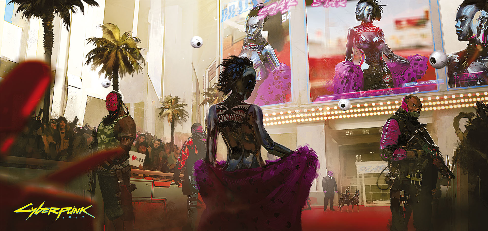
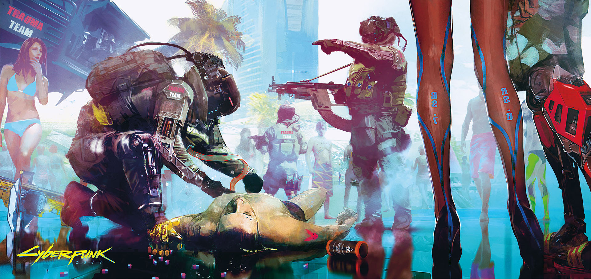
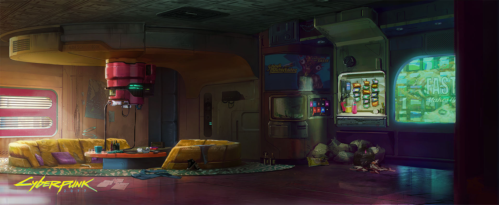

|
在《赛博朋克2077》中，玩家被丢入了一个黑暗的未来社会。故事发生在一个叫做“夜之城（Night City）”的大都会，以它为背景游戏讲述了这样一个人挣扎的故事，他从小在街头长大，一直试图在贫民窟中间找到自己的出路，在帮派和产业巨头的无尽斗争中生存下去，在这个充满污垢和罪恶的城市中成长。毒品、暴力、贫穷和专政并没有在2077年消失，几十年过去了，人们仍然保留着那份贪婪、狭隘和懦弱。但是不断困扰人类的并不只有来自过去的幽灵，还有来自当代的新问题。“惊魂”们的表现越来越狂暴：大街上充满了瘾君子们——他们为一种刚刚出现的娱乐项目所沉迷：“超梦”（braindance)。超梦十分廉价，却可以让人体验到其他人的生活和他们的情绪，尤其是当其他人的生活比自己的更加丰富多彩时，这种刺激是无与伦比的。 |
| |
|  |
说白了，超梦是一种个人经历所制作的电子专辑。观看者可以通过一种叫做“BD播放器（BD Player）”的特殊大脑扩充器直接将这些电子专辑中的数据输入自己的神经系统，超梦让观看者可以同时感受记录者脑中的所有感受，包括情绪、肌肉动作、感知等等。 |
| |
|  |
根据出版公司的不同，超梦专辑中记录的内容也十分不同，有些是比较简单的经历，比如让观察者去体验一个冒险家的故事，所有那些刺激、汗水、景色、虫鸣鸟叫，还有那种推动你不断向前，不畏恐惧、超越肉体极限的好奇心。 |
| |
|  |
但是超梦向人们更多的展现了它的另外一面。由不法分子秘密制造的超梦，会让人进入到一个连环杀手的记忆，让观察者不仅能够看到他变态的行为，更可怕的是能感受到他杀戮的欲望和满足感。 |
|